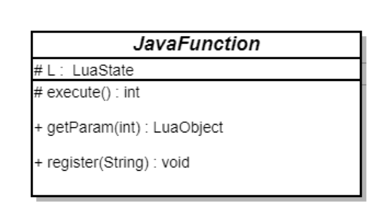

LuaJava在Java、Android中的使用
最近公司在做一个项目，需要用Lua语言编写的脚本来动态控制安卓app的行为。
项目涉及到Lua、LuaJava框架和安卓native开发等知识点。本文主要介绍Lua和Java语言之间是怎么相互调用的，并记录一些开发过程中碰到的问题。
Lua一些概念
Lua是一门扩展式程序设计语言，被设计成支持通用过程式编程，并有相关数据描述设施。同时对面向对象编程、函数式编程和数据驱动式编程也提供了良好的支持。
概念的东西简单看一下就行，总结来说Lua是一种轻量的语言，并且支持多重编程范式，可以任意地对语言进行自需的改造。
作为一门扩展式语言，Lua没有”main”程序的概念：它只能嵌入一个宿主程序中工作，该宿主程序被称为被嵌入程序或者简称宿主。宿主程序可以调用函数执行一小段Lua代码，可以读写Lua变量，可以注册C函数让Lua代码调用。
Lua程序一般不单独运行，虽然也可以但是能做的事情就比较简单。标准的Lua虚拟机通过C语言编写的，一般是通过C\C++来拓展Lua的函数，这样接口兼容速度更快。
这里重点记录一下Lua的栈，方便后面进行描述。
Lua虚拟机与C/C++之间的数据交换基本都是通过Lua构建虚拟栈来交互的，无论何时Lua调用 C，被调用的函数都得到一个新的栈， 这个栈独立于C函数本身的栈，也独立于之前的 Lua 栈。它里面包含了Lua传递给C函数的所有参数，而C函数则把要返回的结果放入这个栈以返回给调用者这里。

如图Lua的栈的访问索引分为正索引和负索引。正的索引指的是栈上的绝对位置（从1开始）；负的索引则指从栈顶开始的偏移量。展开来说，如果堆栈有 n 个元素，那么索引 1 表示第一个元素（也就是最先被压栈的元素）而索引 n 则指最后一个元素；索引 -1 也是指最后一个元素（即栈顶的元素），索引 -n 是指第一个元素。
用自定义C函数拓展Lua虚拟机
自定义的C函数必须得符合Lua定义的方法签名：
1 | |
例如：
1 | |
Lua虚拟机调用函数时，C函数通过Lua中的栈来接受参数，参数以正序入栈（第一个参数首先入栈），当需要向Lua返回值的时候，C函数只需要把它们以正序压到堆栈上（第一个返回值最先压入），然后返回这些返回值的个数。
这么说还比较抽象还是具体举例子来说明，下面假设实现一个函数需要能够同时计算输入参数的平均值与和，然后将两个值返回给Lua层。
1 | |
其中
1 | |
lua_gettop()函数可以得到栈顶元素的索引。因为索引是从1开始编号的,所以这个结果等于栈上的元素个数。特别指出，0表示栈为空。当然这里也可以调用
lua_Number lua_tonumberx (lua_State L, int index, intisnum); 把给定索引处的 Lua 值转换为 lua_Number 这样一个 C 类型
来直接得到指定索引的值。
定义好c函数后，需要将其注册到Lua的虚拟机中才能被调用。
1 | |
这里lua_register是一个宏定义，
1 | |
它的作用把 C 函数 f 设到全局变量 name 中，这样Lua就可以访问这个变量元表对应的call方法作为函数来调用。
最后来写个测试demo来测试一下我们的自定义函数：
test.lua:
1 | |
得到的结果为：
1 | |
So easy~
Java与Lua之间的交互方式
基于上述Lua这种”寄生工作”的特性，Java与Lua语言之间相互调用的思路已经很明显了，就是以JNI作为中介。
通过Native调用Lua：
1 | |
以前的做法是先用C/C++借助JNI编写调用Java的接口函数，然后再将这些函数通过 tolua++工具导出给Lua使用。这种做法最大的问题就是太繁琐，而且稍微有一点点修改，就要重新编译，严重降低了开发效率。
这里我们可以借助一些框架，也就是Lua和Java之间的“桥梁”来省掉不必要的工作，例如：
还有不知名的mochalua，jill等就不贴出来了。
首先LuaJ框架是使用纯Java语言来实现的，它用Java实现了一套自己的Lua虚拟机，所以就不需要JNI来做中介了，所以对于多年不接触C/C++代码的人来看会更加舒服一些。并且该框架还在更新维护，接口用起来更加方便，但是缺点在于纯Java实现，相对C语言实现速度慢。
LuaJava框架就比上一个轻量一些，是基于Lua原生的虚拟机进行开发的，它只对标准的Lua编程API做了简单的JNI封装，Java层的代码也较少。这个框架虽然已经停止维护，但还是能支持最新的Lua5.3版本。
我们开发的项目最后采用的是LuaJava框架，后文也将会对该框架进行解析。
用自定义Java函数拓展Lua虚拟机
LuaJava框架主要是对Lua的编程接口进行简单的封装，并且提供一些方便Lua、Java函数相互调用的接口，节省了自己去写JNI转换代码的功夫。后续会具体解析这个框架是怎么实现这部分的。

这里要使用自定义的Java函数来拓展Lua虚拟机需要以下几步：
- 继承实现抽象类JavaFunction，实现自定义函数内容；
- 调用注册方法注册函数到虚拟机；
- 编写Lua脚本调用函数运行。
先看看JavaFunction类有什么方法，
1 | |
Lua虚拟机的Java层访问接口，记录CLuaSate在C层的指针地址。
1 | |
自定函数执行入口方法，这是一个需要自己实现的抽象方法，参数的获取和返回值的传递都在这里完成，其中返回的int型代表了返回给Lua结果的个数，与上面C方法是类似的。
1 | |
获取Lua参数。在C层获取参数的index是从1开始的拿到函数的第一个参数，但是在这个LuaJava框架里你需要从2开始获得第一个参数，这是框架的一个小坑后面会讲到。
LuaObject就是Lua对象在Java层的一个表示，实际上这个Object只维护了指向Lua注册表对应对象的一个引用，这里用到了Lua的引用机制的知识。
Lua 提供了一个 注册表， 这是一个预定义出来的表， 可以用来保存任何 C 代码想保存的 Lua 值。 这个表可以用有效伪索引 LUA_REGISTRYINDEX 来定位。 任何 C 库都可以在这张表里保存数据， 为了防止冲突，你需要特别小心的选择键名。 一般的用法是，你可以用一个包含你的库名的字符串做为键名， 或者取你自己 C 对象的地址，以轻量用户数据的形式做键， 还可以用你的代码创建出来的任意 Lua 对象做键。 关于变量名，字符串键名中以下划线加大写字母的名字被 Lua 保留。
注册表中的整数键用于引用机制（参见luaL_ref），以及一些预定义的值。因此，整数键不要用于别的目的。
1 | |
注册函数到Lua虚拟机。编写好具体Java类后只需要调用该父类方法，传入你的自定义函数名称就ok了！
下面还是具体来讲个例子。这个自定义函数实现一个打印Log内容，最后返回一个boolean值的功能。
1 | |
编写好自定义函数之后，初始化LuaState，
1 | |
最后注册函数，编写我们的测试用例即可，
1 | |
测试代码test.lua：
1 | |
得到期望的输出结果：
1 | |
LuaJava框架的工作原理
上面说到我们需要调用注册方法register来注册自定义Java函数，查看其源码发现和C代码的实现是一样的，也是拆分成了两个步骤：
1 | |
第一步将Java对象压栈，Java部分没有什么代码，直接是调用了对应的native方法，jni_pushJavaFunction 来工作，看一下具体实现代码：
1 | |
首先创建一块Lua的Userdata数据类型，
1 | |
这个userdata其实就是分配出一块jobject大小内存，用来记录对应的函数指针地址即通过JNI传来的javaFunctionObjRef，L是C层的LuaState指针。
接下来需要创建该userdata的元表（metadata），还不清楚元表概念的返回去查手册看看就行，
1 | |
这里将元表函数调用的常量标识LUACALLMETAMETHODTAG压入栈作为key，把一个叫做luaJavaFunctionCall函数的地址作为value，这样Lua以函数的方式调用这块userdata的时候就可以从元表查到这个函数地址并调用。
最后回到Java层，
1 | |
将这一个userdata设置为一个全局变量，Lua脚本在运行时候就能正常操作这个变量了。
所以这个luaJavaFunctionCall函数就是自定义函数被Lua脚本调用到时，真正工作的地方，其实对应实现在C层：
1 | |
看到这里在回去看看前面的JavaFunction.java类，就基本明白是怎么回事了。首先从函数栈中取出第一个参数（这里参考前面的自定义C函数部分），就是前面我们创建的userdata，是自定义JavaFunction类的指针，前面说到有一个坑点就在这里，JavaFUntion类的获取参数为什么要从index=2开始，
1 | |
因为第一个参数是我们的userdata本身，第二个开始才是正确的函数参数。
最后很简单了，通过jni反射调用Java层的execute方法（java_function_method）执行Java层的工作。
也是So easy！
到此完成一次完整的使用Java函数拓展Lua虚拟机的过程。这种方法和用C语言来拓展方式不太一样的地方，就是userdata和元表，获取参数的顺序也不太一样，再往深入的虚拟机里面的实现也还没来得及看，以后有时间的话再继续研究研究。
后记
这个Luajava框架其实坑点和问题其实还是很多的，并不能完善的上线，例如无法中断停止脚本、多线程问题和JavaGC超时异常等等问题也是头疼，但是经过本人的优化修改都已经把这些问题解决了~后续会继续写文记录一下。
One more，如果有能力和时间其实还是不建议使用这个框架了，太麻烦性能也不是特别好，自己从0搞一个。
这篇文章挖坑了好久，终于趁着放假填完了哈哈哈，之前这个新产品赶着上线事情太多了~
本博客所有文章除特别声明外，均采用 CC BY-SA 4.0 协议 ，转载请注明出处！